gou07 : unidirection dimerisation and quadratic autocatalator¶
Overview¶
The cmepy.models.gou07 modules defines two models of systems given as examples by Goutsias [GOU07] .
The first model is a unidirectional dimerisation model, which consists of the single reaction:
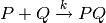
The rate coefficient for this reaction is 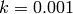. Initially there
are 10 copies of both species  and
and  .
.
This model can be used in CmePy as follows:
from cmepy.models import gou07
model = gou07.create_model_uni_dim()
The second model defined by this module is called the quadratic autocatalator, and is a system of six reactions:
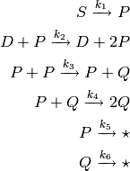
The rate coefficients of these reactions are
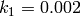,
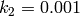,
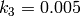,
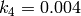,
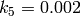 and
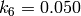,
while the initial copy counts are 3 copies of the species  and zero copies of all other species.
and zero copies of all other species.
This model can be used in CmePy as follows:
from cmepy.models import gou07
model = gou07.create_model_quad_autocat()
Note
Goutsias [GOU07] actually assumes that the copy count of the species
used in the above model is in fact constant, so that the first
reaction 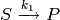 proceeds with a fixed propensity.
This behaviour can be enabled by passing the keyword argument fixed_s = True when calling the create_model_quad_autocat() function to create the quadratic autocatalator model.
Running the model¶
The source code for these models is listed below.
The function main() defined in the module cmepy.models.gou07 solves the quadratic autocatalator model. To run this function, open the Python interpreter and enter:
>>> from cmepy.models import gou07
>>> gou07.main()
This will solve the system up to 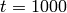, over 100 steps, then display plots of the standard deviation and expected value of the species counts, as seen below.


Source¶
"""
Quadratic autocatalator and unidirection dimerisation models.
These models are adapted from the examples given by Goutsias, 2007:
@article{goutsias2007classical,
title={{Classical versus stochastic kinetics modeling
of biochemical reaction systems}},
author={Goutsias, J.},
journal={Biophysical Journal},
volume={92},
number={7},
pages={},
year={2007},
publisher={Elsevier}
}
"""
import numpy
from cmepy import model
from cmepy.util import non_neg
def create_model_uni_dim(initial_copies = 10, rate = 0.001):
"""
returns model for P+Q -> PQ with initial copies of P, Q and rate specified.
"""
m = model.create(
name = 'Unidirectional Dimerisation',
propensities = [lambda x : rate*(initial_copies-x)**2],
transitions = [(1, )],
reactions = ['P+Q -> PQ'],
species = ['P', 'Q', 'PQ'],
species_counts = (lambda x : initial_copies - x, )*2 + (lambda x : x, ),
shape = (initial_copies + 1, ),
initial_state = (0, )
)
return m
def create_model_quad_autocat(max_p=30,
max_q=30,
fixed_s=True,
s_0=10,
d_0=2,
vol=1.0):
"""
Creates a species-count based model for the system of reactions:
S->P
D+P->D+P+P
P+P->P+Q
P+Q->Q+Q
P->*
Q->*
The copy counts of the species S and D are assumed to be constant,
with s_0 (default 10) copies of S and d_0 (default 2) copies of D.
If fixed_s is set to False, copy count of species S will no longer be
constant, and will be decreased by the reaction S->P.
"""
model_name = 'Quadratic Autocatalator (%s S)'
p = lambda *x : x[0]
q = lambda *x : x[1]
d = lambda *x : d_0
if fixed_s:
s = lambda *x : s_0
model_name %= 'fixed'
transitions = (
(1, 0),
(1, 0),
(-1, 1),
(-1, 1),
(-1, 0),
(0, -1),
)
shape = (max_p+1, max_q+1)
initial_state = (0, )*2
else:
model_name %= 'variable'
s = lambda *x : x[2]
transitions = (
(1, 0, -1),
(1, 0, 0),
(-1, 1, 0),
(-1, 1, 0),
(-1, 0, 0),
(0, -1, 0),
)
shape = (max_p+1, max_q+1, s_0+1)
initial_state = (0, 0, 3, )
m = model.create(
name = model_name,
reactions = (
'S->P',
'D+P->D+2P',
'P+P->P+Q',
'P+Q->2Q',
'P->*',
'Q->*',
),
propensities = (
lambda *x : 0.002 * (vol ** -1) * s(*x),
lambda *x : 0.001 * (vol ** -2) * d(*x) * p(*x),
lambda *x : 0.005 * (vol ** -2) * p(*x) * non_neg(p(*x) - 1) / 2.0,
lambda *x : 0.004 * (vol ** -2) * p(*x) * q(*x),
lambda *x : 0.002 * (vol ** -1) * p(*x),
lambda *x : 0.050 * (vol ** -1) * q(*x),
),
transitions = transitions,
species = ('P', 'Q', 'S', 'D',
),
species_counts = ( p, q, s, d, ),
shape = shape,
initial_state = initial_state
)
return m
def main():
import cmepy.solver
import cmepy.recorder
m = create_model_quad_autocat(fixed_s = False)
solver = cmepy.solver.create(
m,
sink = True
)
recorder = cmepy.recorder.create(
(m.species,
m.species_counts)
)
time_steps = numpy.linspace(0.0, 1000.0, 101)
for t in time_steps:
solver.step(t)
p, p_sink = solver.y
recorder.write(t, p)
print 't = %g; p_sink = %g' % (t, p_sink)
cmepy.recorder.display_plots(recorder, title = m.name)
References
| [GOU07] | (1, 2) Goutsias, J., Classical versus stochastic kinetics modeling of biochemical reaction systems, Biophysical Journal (2007), Vol 92, pp. 2350–2365. |